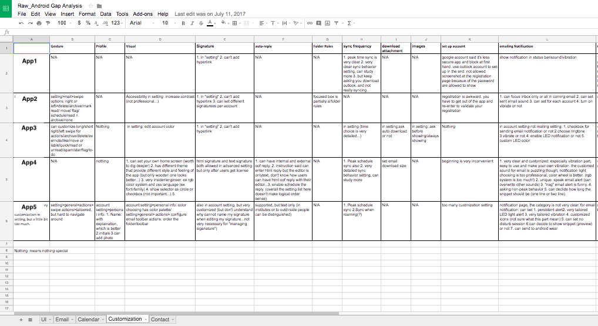
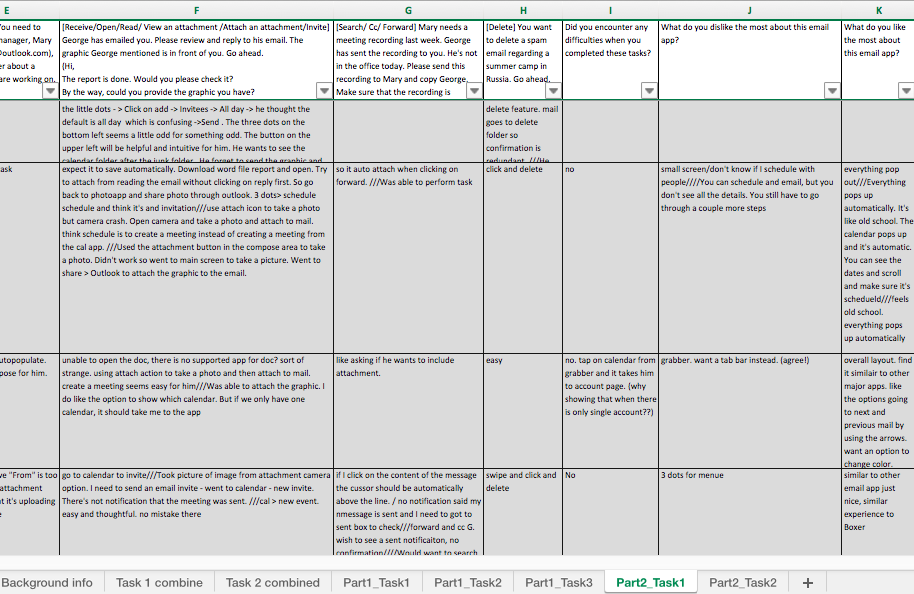
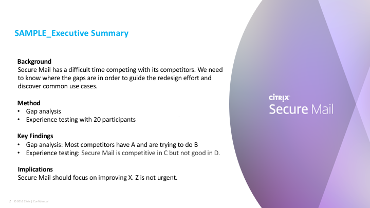
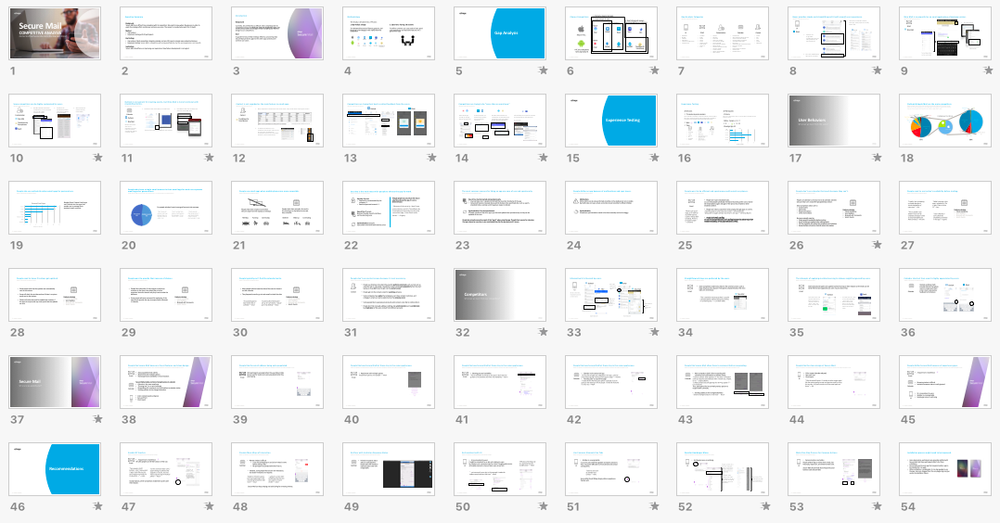

Secure Mail was an enterprise-based email app from Citrix. It received complaints from users and had a hard time competing with its competitors. The team was trying to redesign the app but didn't have enough information to move on and make effective improvements. I came in to help identify use cases and understand the market positioning of Secure Mail among its competitors.
Working as a design research intern at Citrix for 12 weeks, I was treated as a full-time UX researcher and led the research. I enjoyed working with designers, researchers, project/program managers, and engineers. The experience was amazing.
My Role
What I used: Gap analysis, interview, task-based experience testing, content analysis
I led the study, including working with a vendor for recruitment, planning and designing the study, conducting the gap analysis, executing user experience testing sessions, analyzing data, writing a report and holding a meeting for findings and recommendations readout.
Goals
The research I conducted was trying to:
guide the redesign effort
discover common user cases
understand the market positioning of the product
Secure Mail app user interface
Plan
I planned the research and divided it into two phases:
Gap Analysis with 10 Competitors on iPhone and Android phone:
To understand the trends of features, gestures, and layouts of current designs in the market from the competitors
Experience Testing with 20 Participants:
To define common use cases and to learn good user experience and desirable features for a good email app
Timeline
Sample study artifact: Research plan in PowerPoint
Process
Gap Analysis
I went through 10 competitors on iPhone and Android phone from downloading, setting up, to all the tasks such as emailing, scheduling, adding contacts, or changing settings, etc. Then I created a table that noted down my observation of features and UI of each competitor app.
Sample study artifacts:
Raw data for gap analysis

Final gap analysis table
While working on the gap analysis, I wrote screener for the vendor to recruit participants for the experience testing in the meantime.
User Experience Testing
I. Study Design
With the gap analysis, I had a deeper understanding about our competitors and thus when I was writing the study guide for my experience testing, I had a more vivid idea of what I needed to ask and what kind of tasks I wanted to see the participants perform.
After drafting the protocol, I reviewed it with the core team and did a pilot testing to make final adjustments before running the sessions.
II. Execution
The original plan was to conduct 3 sessions in a day, and 30 sessions in total. However, we didn't recruit 30 participants at the end. Instead, we had 20. The number was in fact good enough for us to gather feedback and generate a report.
I, therefore, conducted 20 user experience testing and investigated on when and how the participants used their work email app daily, what they liked and disliked with the app, and what they found confusing with the interface.
In-lab research
Observer room
III. Data Analysis
I started from cleaning the raw data, which meant going back to the recordings, reading through the notes taken by different note takers, completed and fixed the missing data.
Sample study artifacts: Notes from user testing

Then I used content coding and analysis to analyze the cleaned data and drafted the report.
Sample study artifacts: Content analysis
Final Report and Impacts
The final report was a comprehensive competitive analysis that based on the findings from the gap analysis and the user experience testing. The findings were categorized into three different criteria:
Learnings from the competitors
Findings for user behaviors and use cases
Feedback on the experience with Secure Mail
At the end of the report, the design recommendations were provided. The suggestions specified what parts of the user interfaces needed fixing and why.
Sample study artifacts:


Full report in PowerPoint
The report was delivered to the product design team and the engineering team. The findings and recommendations helped prioritize features. The team could move on and redesign the app.
Lessons
I encountered many issues while running the sessions such as:
In those unexpected cases, I learned mostly about how to be flexible and calm when there was something went wrong. I learned how to get the information that I wanted from users in chaotic circumstances. I also learned how to make participants relax and how to avoid misleading questions so participants would be willing to tell more about their feelings.
I observed that most people didn't want to hurt others feeling. Thus, when they were saying something negative, they became more hesitant. I needed to remind them to be candid.
Reflection
At school, we always emphasized on a process. But in the industrial context, a result was more important. Thinking about how to present and how the information could be digested helped me display the findings and recommendations effectively. Therefore, I found I should start creating the presentation before finishing data analysis. I should keep in mind that, though I had all the insights and user flows in my mind, engineers and designers needed to know the logic behind the design recommendations I made.
Thus, I also felt the power of raw data. Quotes and recordings were the solid pieces of evidence that backed up the research.
My Works
Secure Mail: Agile User Testing (NDA)
February, 2018
Secure Mail was being redesigned and would launch the new user interface based on the findings and recommendations from the Competitive Analysis that I did during my summer internship. I conducted 6 user testing to help validate the new design concepts. Read More>>
Secure Mail: Benchmarking Research (NDA)
May - August, 2017
I worked as a Product Design Research Intern at Citrix Product Design team. I led the UX research study on Secure Mail app to guide the redesign efforts with design recommendations. I did a competitive analysis with gap analysis and 20 user experience testing to identify the use cases and understand the product positioning in the market. Read More>>
To comply with my Non-Disclosure Agreement (NDA), I have omitted or reinterpreted the confidential information, but it wouldn't affect me to share my thoughts, personal experience, and what I had learned with you.
Expedia Mobile App: Discovering Millennials Trip Planning Behavior
January - April, 2017
My teammates and I conducted interviews, comparative analysis, surveys, heuristic evaluation, online surveys, and usability testing to investigate how millennial travelers planned their trips with online tools. Based on our findings, Expedia would expand their service and create a new feature that would assist people to explore new destinations for travel. Read More>>
2nd Brain: Needs Finding and Validation
January - April, 2017
My team members and I conducted surveys, focus groups, and in-depth interviews to study what problems teenagers with chronic illnesses were facing and what they needed to improve their medication adherence. The project was particularly interesting due to the traits of our audiences and the dynamic relationship between stakeholders and audiences. Therefore, the process of needs validation was unique and challenging. Read More>>
Michigan Legal Help: Identified Workflow Issues
September - December, 2016
Using contextual inquiries, my teammates and I investigated how people work at Michigan Legal Help, a non-profit organization, in order to help them upgrade their workflow. Read More>>
 AMY CHEN
AMY CHEN


 In-lab research
In-lab research
 Observer room
Observer room